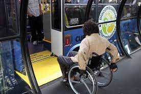

Acessibilidade

ACESSIBILIDADE PARA IDOSOS: VAMOS MUDAR NOSSA REALIDADE?
No dicionário, a definição de acessibilidade é a seguinte: “qualidade do que é acessível e do que tem acesso”. Isso significa a possibilidade de utilização de espaços públicos ou coletivos com segurança para todos.
Então por que sempre que pensamos sobre este tema, relacionamos a palavra apenas a pessoas portadoras de algum tipo de deficiência física?
A Organização Mundial da Saúde (OMS) prevê que até 2050 o Brasil será um dos países com o maior número de idosos do mundo. Enquanto o número vai duplicar em outros países, por aqui ele deverá triplicar.
As dificuldades de acessibilidade para idosos no transporte público
Apesar de oferecerem algumas alternativas, como assentos preferenciais nos ônibus e bancos em áreas comuns reservados para a terceira idade, a garantia de acessibilidade para idosos no transporte público ainda é precária no Brasil: poucos veículos são adaptados com rampas de acesso ou mesmo plataformas retráteis, obrigando o idoso a realizar um esforço muito grande para embarcar. Tudo isso restringe a capacidade do idoso de se distrair e se divertir, algo bastante importante nesta faixa etária e apontado como um dos fatores cruciais para um envelhecimento mais saudável. A alternativa acaba sendo optar por comprar particulares adaptados, que nem sempre são acessíveis financeiramente para as famílias.
Os principais problemas da acessibilidade urbana para idosos e pessoas com mobilidade reduzida
A acessibilidade para idosos tem gerado inúmeros debates, mas na prática ela ainda é bastante problemática.
A falta de conhecimento, somado a certo preconceito social sobre a causa, ainda assola grande parte da população. E não só isso: ela também afeta a execução de políticas públicas e privadas desse âmbito.
Pouca gente sabe, por exemplo, que um projeto arquitetônico planejado adequadamente às condições de acessibilidade para idosos ou pessoas com mobilidade reduzida tem acréscimo de apenas 1% no valor final da obra em construção. Por outro lado, a adaptação de espaços existentes chega a alcançar 25%.
Asfalto quebrado, buracos e objetos no meio do caminho, como postes mal colocados, dificultam o trânsito das pessoas e são apenas o início do problema. Dentro dos espaços privados há também muitos lugares que não são adequados às medidas do padrão Associação Brasileira de Normas Técnicas (ABNT), responsável por regularizar e padronizar diversas áreas de convívio social. São essas normas que deveriam tornar o espaço acessível a todos.